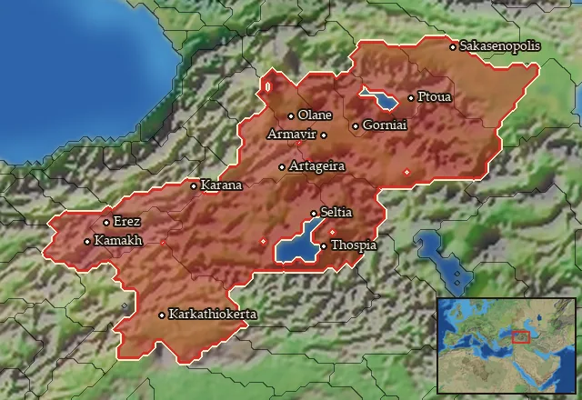

RTR: Imperium Surrectum
RTR: Imperium SurrectumDescription
Following the proud Assyrian, Urartian, and Achaemenid tradition of bowmanship, these archers are lower nobility who fight as an elite archer unit for Armenian monarchs. Armed with composite bows of the Scythian style, as well as a dagger sidearm, they wear the traditional ankle-length robes common already in the now-ancient Urartian period. As nobles, they have access to fine scale bronze armour to protect them from enemy arrow fire, as well as a highly decorated iron helmet with a curtain of mail riveted to the sides and back for additional protection. From childhood, these men have trained in bowmanship, and they are formidable with them. Their armour makes them less mobile than levy archers, but they are far more resilient in a skirmish, even if they are better kept away from a melee.
Stats
| Rank in roster | Rank in roster | Rank in roster | Rank in roster | ||||||||
|---|---|---|---|---|---|---|---|---|---|---|---|
| Attack | 11 | ████······ 44% | Charge bonus | 5 | ███······· 26% | Defence | 23 | ███······· 26% | · armour | 11 | ███████··· 66% |
| · defence skill | 12 | █········· 10% | · shield | 0 | █········· 0% | Morale | 10 | ███······· 30% | Discipline | normal | |
| Training | untrained | Recruitment cost | 1,799 dn | ████······ 37% | Upkeep per turn | 658 dn | ██████···· 55% | Turns to recruit | 4 |
Weapons
| Primary | Secondary | Primary | Secondary | Primary | Secondary | Primary | Secondary | ||||
|---|---|---|---|---|---|---|---|---|---|---|---|
| Attack | 11 | 4 | Charge bonus | 5 | 5 | Type | missile · archery | melee · simple | Damage | piercing | piercing |
| Projectile | arrow | — | Range | 170 | — | Ammunition | 25 | — | Attributes | — | — |
| Min delay between blows | 25 | 25 |
Defence
| Primary | Secondary | Primary | Secondary | Primary | Secondary | Primary | Secondary | ||||
|---|---|---|---|---|---|---|---|---|---|---|---|
| Total | 23 | — | Armour | 11 | — | Defence skill | 12 | — | Shield | 0 | — |
| Material | metal | — |
Condition, terrain and upkeep
| Hit points | 1 · mount 6 | Bonus against mounts | elephant -1 | Ground: scrub / sand / forest / snow | 0 / -1 / 0 / -1 | Heat penalty | 0 |
| Charge distance | 30 | Fire delay | 0 | Food consumed (low / high) | 60 / 300 | Formation: close / loose | 1.1 x 2.6 / 1.98 x 4.68 · 5 ranks · square |
| Men per unit | — as the unit file states — the game multiplies this by your unit size |
In battle: Can hide in long grass · Very good stamina
The full attribute list (4)
sea_faring, hide_forest, hide_long_grass, very_hardy
Who can recruit it
A core roster unit for 9 factions, each able to raise it anywhere they hold the right building:
Albanians · Armenia · Armenia Minor · Colchians · Commagene · Heniochi · Iberians · Mossynoeci · Sophene
Any faction holding one of the provinces below can field it.
Exactly what a settlement must have, route by route (4)
| Building | Also requires | Building | Also requires | Building | Also requires | Building | Also requires |
|---|---|---|---|---|---|---|---|
| Region Information Scroll | Tier 3 Military Industrial Complex · Armenian area of recruitment · Any Government (Dependency, Indirect Rule or Direct Rule) | Tier 2 Colony not built | Direct Rule | Tier 3 Military Industrial Complex · Tier 2 Colony | Homeland | Tier 2 Military Industrial Complex | Region Information Scroll | Tier 2 Military Industrial Complex · Armenian area of recruitment · Dependency only | Tier 1 Colony not built |
Areas of recruitment

| Zone | Provinces | ||||||
|---|---|---|---|---|---|---|---|
| Armenian | 12 |